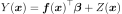
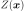
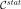
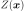
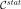
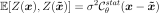
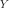

KrigingRandomVector¶
-
class
KrigingRandomVector(*args)¶ KrigingRandom vector, a conditioned Gaussian process.
- Available constructors:
- KrigingRandomVector(krigingResult, points)
Parameters: - krigingResult :
KrigingResult Structure that contains elements of computation of a kriging algorithm
- points : 1-d or 2-d sequence of float
Notes
KrigingRandomVector helps to create Gaussian random vector, , with stationary covariance function , conditionally to some observations.
Let be the observations of the Gaussian process. We assume the same Gaussian prior as in the
KrigingAlgorithm:
with
 a general linear model,  a zero-mean Gaussian process with a stationary autocorrelation function :
a general linear model,  a zero-mean Gaussian process with a stationary autocorrelation function :
The objective is to generate realizations of the random vector , on new points , conditionally to these observations. For that purpose,
KrigingAlgorithmbuild such a prior and stores results in aKrigingResultstructure on a first step. This structure is given as input argument.Then, in a second step, both the prior and the covariance on input points , conditionally to the previous observations, are evaluated (respectively and ).
Finally realizations are randomly generated by the Gaussian distribution
KrigingRandomVector class inherits from
UsualRandomVector. Thus it stores the previous distribution and returns elements thanks to that distribution (realization, mean, covariance, sample…)Methods
getAntecedent()Accessor to the antecedent RandomVector in case of a composite RandomVector. getClassName()Accessor to the object’s name. getCovariance()Accessor to the covariance of the RandomVector. getDescription()Accessor to the description of the RandomVector. getDimension()Accessor to the dimension of the RandomVector. getDistribution()Accessor to the distribution of the RandomVector. getDomain()Accessor to the domain of the Event. getFunction()Accessor to the Function in case of a composite RandomVector. getId()Accessor to the object’s id. getKrigingResult()Return the kriging result structure. getMarginal(*args)Get the random vector corresponding to the  marginal component(s).
marginal component(s).getMean()Accessor to the mean of the RandomVector. getName()Accessor to the object’s name. getOperator()Accessor to the comparaison operator of the Event. getParameter()Accessor to the parameter of the distribution. getParameterDescription()Accessor to the parameter description of the distribution. getProcess()Get the stochastic process. getRealization()Compute a realization of the conditional Gaussian process (conditional on the learning set). getSample(*args)Compute a sample of realizations of the conditional Gaussian process (conditional on the learning set). getShadowedId()Accessor to the object’s shadowed id. getThreshold()Accessor to the threshold of the Event. getVisibility()Accessor to the object’s visibility state. hasName()Test if the object is named. hasVisibleName()Test if the object has a distinguishable name. isComposite()Accessor to know if the RandomVector is a composite one. setDescription(description)Accessor to the description of the RandomVector. setName(name)Accessor to the object’s name. setParameter(parameters)Accessor to the parameter of the distribution. setShadowedId(id)Accessor to the object’s shadowed id. setVisibility(visible)Accessor to the object’s visibility state. -
__init__(*args)¶ Initialize self. See help(type(self)) for accurate signature.
-
getAntecedent()¶ Accessor to the antecedent RandomVector in case of a composite RandomVector.
Returns: - antecedent :
RandomVector Antecedent RandomVector
 in case of a
in case of a
CompositeRandomVectorsuch as: .
.
- antecedent :
-
getClassName()¶ Accessor to the object’s name.
Returns: - class_name : str
The object class name (object.__class__.__name__).
-
getCovariance()¶ Accessor to the covariance of the RandomVector.
Returns: - covariance :
CovarianceMatrix Covariance of the considered
UsualRandomVector.
Examples
>>> import openturns as ot >>> distribution = ot.Normal([0.0, 0.5], [1.0, 1.5], ot.CorrelationMatrix(2)) >>> randomVector = ot.RandomVector(distribution) >>> ot.RandomGenerator.SetSeed(0) >>> print(randomVector.getCovariance()) [[ 1 0 ] [ 0 2.25 ]]
- covariance :
-
getDescription()¶ Accessor to the description of the RandomVector.
Returns: - description :
Description Describes the components of the RandomVector.
- description :
-
getDimension()¶ Accessor to the dimension of the RandomVector.
Returns: - dimension : positive int
Dimension of the RandomVector.
-
getDistribution()¶ Accessor to the distribution of the RandomVector.
Returns: - distribution :
Distribution Distribution of the considered
UsualRandomVector.
Examples
>>> import openturns as ot >>> distribution = ot.Normal([0.0, 0.0], [1.0, 1.0], ot.CorrelationMatrix(2)) >>> randomVector = ot.RandomVector(distribution) >>> ot.RandomGenerator.SetSeed(0) >>> print(randomVector.getDistribution()) Normal(mu = [0,0], sigma = [1,1], R = [[ 1 0 ] [ 0 1 ]])
- distribution :
-
getDomain()¶ Accessor to the domain of the Event.
Returns: - domain :
Domain Describes the domain of an event.
- domain :
-
getFunction()¶ Accessor to the Function in case of a composite RandomVector.
Returns: - function :
Function Function used to define a
CompositeRandomVectoras the image through this function of the antecedent:
.
- function :
-
getId()¶ Accessor to the object’s id.
Returns: - id : int
Internal unique identifier.
-
getKrigingResult()¶ Return the kriging result structure.
Returns: - krigResult :
KrigingResult The structure containing the elements of a KrigingAlgorithm.
Examples
>>> import openturns as ot >>> ot.RandomGenerator.SetSeed(0) >>> sampleSize = 6 >>> dimension = 1 >>> f = ot.SymbolicFunction(['x0'], ['x0 * sin(x0)']) >>> X = ot.Sample(sampleSize, dimension) >>> for i in range(sampleSize): ... X[i, 0] = 3.0 + i >>> X[0, 0] = 1.0 >>> X[1, 0] = 3.0 >>> Y = f(X) >>> # create algorithm >>> basis = ot.ConstantBasisFactory(dimension).build() >>> covarianceModel = ot.SquaredExponential([2.23606797749979]) >>> algo = ot.KrigingAlgorithm(X, Y, covarianceModel, basis) >>> algo.run() >>> # get the results >>> result = algo.getResult() >>> # Random vector evaluation >>> rvector = ot.KrigingRandomVector(result, [[0.0]]) >>> # Get the kriging result >>> krigResult = rvector.getKrigingResult()
- krigResult :
-
getMarginal(*args)¶ Get the random vector corresponding to the
marginal component(s).Parameters: - i : int or list of ints,

Indicates the component(s) concerned.
 is the dimension of the
RandomVector.
is the dimension of the
RandomVector.
Returns: - vector :
RandomVector RandomVector restricted to the concerned components.
Notes
Let’s note a random vector and
![I \in [1,n]](../../../_images/math/29656406fed79a275f5b67974c1be77969cce4e0.svg) a set of indices. If is a
a set of indices. If is a
UsualRandomVector, the subvector is defined by . If is a
. If is a
CompositeRandomVector, defined by with  ,
some scalar functions, the subvector is
,
some scalar functions, the subvector is
 .
.Examples
>>> import openturns as ot >>> distribution = ot.Normal([0.0, 0.0], [1.0, 1.0], ot.CorrelationMatrix(2)) >>> randomVector = ot.RandomVector(distribution) >>> ot.RandomGenerator.SetSeed(0) >>> print(randomVector.getMarginal(1).getRealization()) [0.608202] >>> print(randomVector.getMarginal(1).getDistribution()) Normal(mu = 0, sigma = 1)
- i : int or list of ints,
-
getMean()¶ Accessor to the mean of the RandomVector.
Returns: - mean :
Point Mean of the considered
UsualRandomVector.
Examples
>>> import openturns as ot >>> distribution = ot.Normal([0.0, 0.5], [1.0, 1.5], ot.CorrelationMatrix(2)) >>> randomVector = ot.RandomVector(distribution) >>> ot.RandomGenerator.SetSeed(0) >>> print(randomVector.getMean()) [0,0.5]
- mean :
-
getName()¶ Accessor to the object’s name.
Returns: - name : str
The name of the object.
-
getOperator()¶ Accessor to the comparaison operator of the Event.
Returns: - operator :
ComparisonOperator Comparaison operator used to define the
Event.
- operator :
-
getParameter()¶ Accessor to the parameter of the distribution.
Returns: - parameter :
Point Parameter values.
- parameter :
-
getParameterDescription()¶ Accessor to the parameter description of the distribution.
Returns: - description :
Description Parameter names.
- description :
-
getProcess()¶ Get the stochastic process.
Returns:
-
getRealization()¶ Compute a realization of the conditional Gaussian process (conditional on the learning set).
The realization predicts the value on the given input points.
Returns: - realization :
Point Sequence of values of the Gaussian process.
See also
Examples
>>> import openturns as ot >>> ot.RandomGenerator.SetSeed(0) >>> sampleSize = 6 >>> dimension = 1 >>> f = ot.SymbolicFunction(['x0'], ['x0 * sin(x0)']) >>> X = ot.Sample(sampleSize, dimension) >>> for i in range(sampleSize): ... X[i, 0] = 3.0 + i >>> X[0, 0] = 1.0 >>> X[1, 0] = 3.0 >>> Y = f(X) >>> # create algorithm >>> basis = ot.ConstantBasisFactory(dimension).build() >>> covarianceModel = ot.SquaredExponential([2.23606797749979]) >>> algo = ot.KrigingAlgorithm(X, Y, covarianceModel, basis) >>> algo.run() >>> # get the results >>> result = algo.getResult() >>> # Random vector evaluation >>> rvector = ot.KrigingRandomVector(result, [[0]]) >>> # Realization of the random vector >>> realization = rvector.getRealization()
- realization :
-
getSample(*args)¶ Compute a sample of realizations of the conditional Gaussian process (conditional on the learning set).
The realization predicts the value on the given input points.
Returns: - realizations :
Sample 2-d float sequence of values of the Gaussian process.
See also
Examples
>>> import openturns as ot >>> ot.RandomGenerator.SetSeed(0) >>> sampleSize = 6 >>> dimension = 1 >>> f = ot.SymbolicFunction(['x0'], ['x0 * sin(x0)']) >>> X = ot.Sample(sampleSize, dimension) >>> for i in range(sampleSize): ... X[i, 0] = 3.0 + i >>> X[0, 0] = 1.0 >>> X[1, 0] = 3.0 >>> Y = f(X) >>> # create algorithm >>> basis = ot.ConstantBasisFactory(dimension).build() >>> covarianceModel = ot.SquaredExponential([2.23606797749979]) >>> algo = ot.KrigingAlgorithm(X, Y, covarianceModel, basis) >>> algo.run() >>> # get the results >>> result = algo.getResult() >>> # Random vector evaluation >>> rvector = ot.KrigingRandomVector(result, [[0.0]]) >>> # Realization of the random vector >>> realizations = rvector.getSample(5)
- realizations :
-
getShadowedId()¶ Accessor to the object’s shadowed id.
Returns: - id : int
Internal unique identifier.
-
getThreshold()¶ Accessor to the threshold of the Event.
Returns: - threshold : float
Threshold of the
Event.
-
getVisibility()¶ Accessor to the object’s visibility state.
Returns: - visible : bool
Visibility flag.
-
hasName()¶ Test if the object is named.
Returns: - hasName : bool
True if the name is not empty.
-
hasVisibleName()¶ Test if the object has a distinguishable name.
Returns: - hasVisibleName : bool
True if the name is not empty and not the default one.
-
isComposite()¶ Accessor to know if the RandomVector is a composite one.
Returns: - isComposite : bool
Indicates if the RandomVector is of type Composite or not.
-
setDescription(description)¶ Accessor to the description of the RandomVector.
Parameters: - description : str or sequence of str
Describes the components of the RandomVector.
-
setName(name)¶ Accessor to the object’s name.
Parameters: - name : str
The name of the object.
-
setParameter(parameters)¶ Accessor to the parameter of the distribution.
Parameters: - parameter : sequence of float
Parameter values.
-
setShadowedId(id)¶ Accessor to the object’s shadowed id.
Parameters: - id : int
Internal unique identifier.
-
setVisibility(visible)¶ Accessor to the object’s visibility state.
Parameters: - visible : bool
Visibility flag.